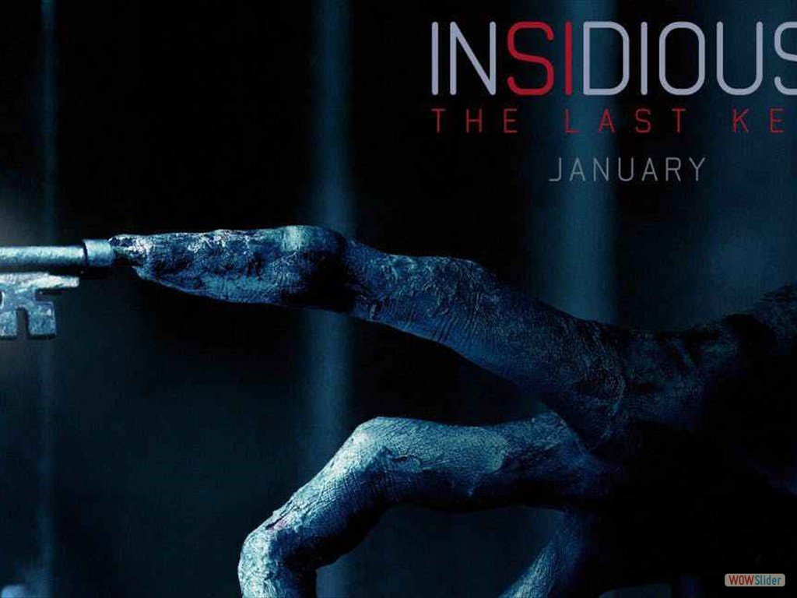
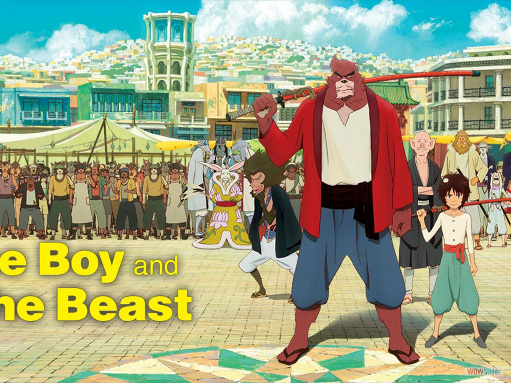
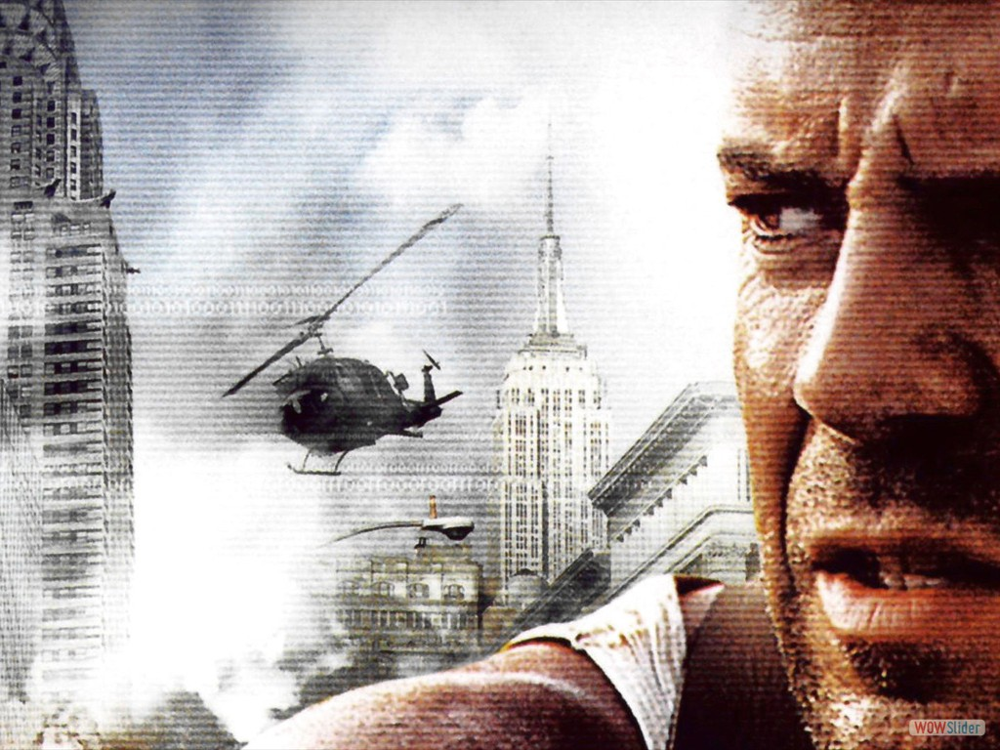
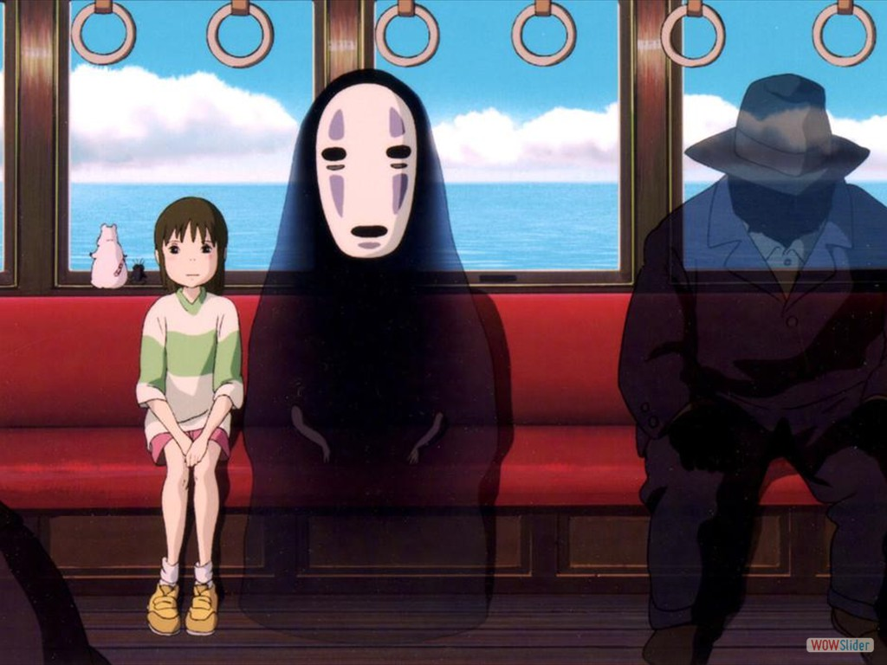
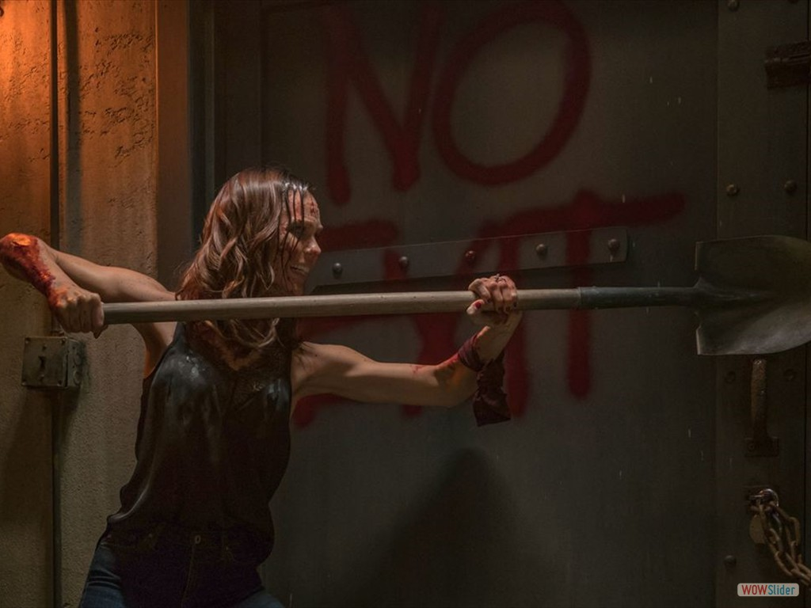
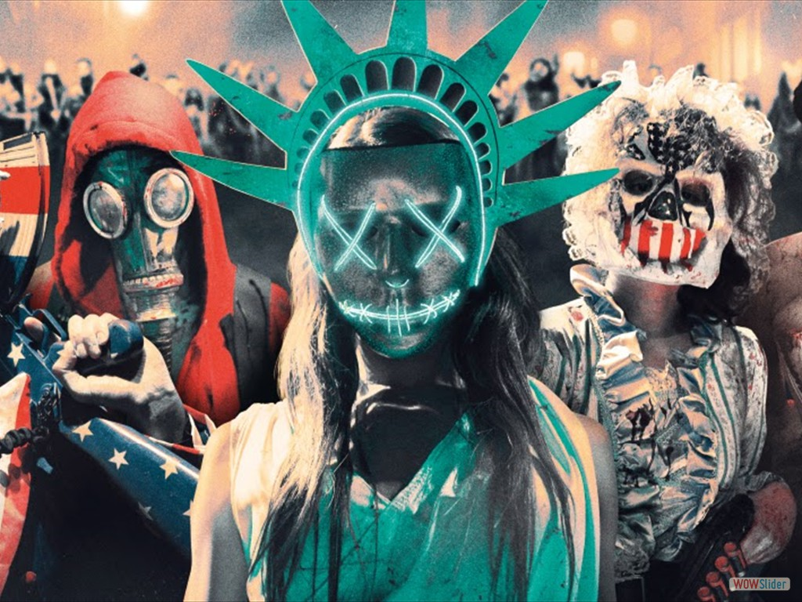
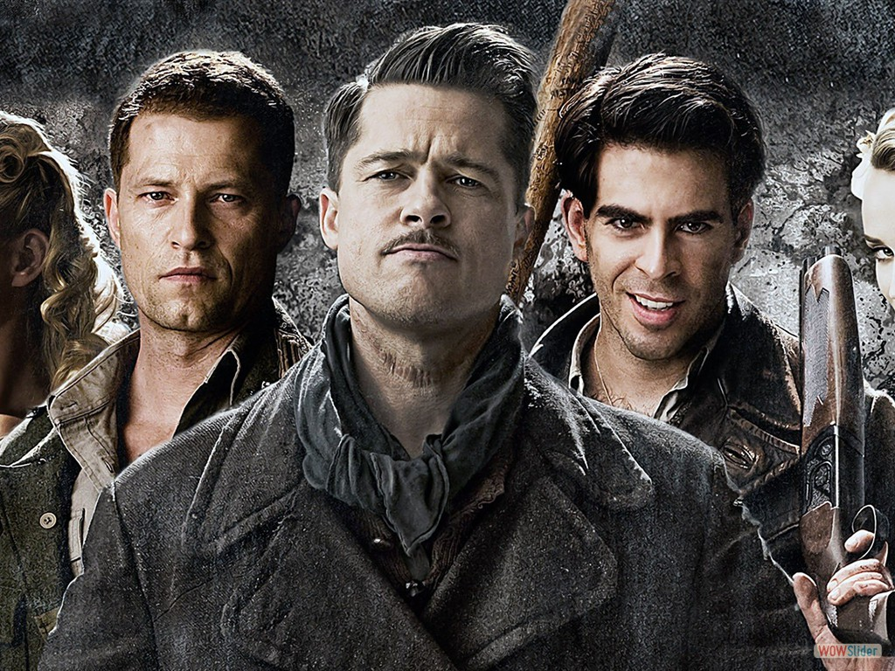

- 
- 
- 
- 
- 
- 
- 
 3
3 5
5html slider by WOWSlider.com v8.8
La verdadera casa de la pelicula
La categorización de cine de acción surge por la necesidad de clasificar cintas explosivas, con actores populares y con tramas lineales, llenas de espectacularidad y opulencia aparecidas a mediados de los setenta en el cine estadounidense.
Ver categoríaDirectores como Mamoru Hosoda, Keiichi Hara, Naoko Yamada o Makoto Shinkai han demostrado ser dignos sucesores y traer historias nuevas, distintas y que merecen la pena de ver.
Ver categoría¿Qué convierte a una película de terror en terrorífica? Si pensamos en lo que hemos podido ver en los últimos 20 años, podemos pensar que lo que marca ese terror es la cantidad de trozos de carne y piel cortados en forma de cuadritos que vuelan por la pantalla.
Ver categoría